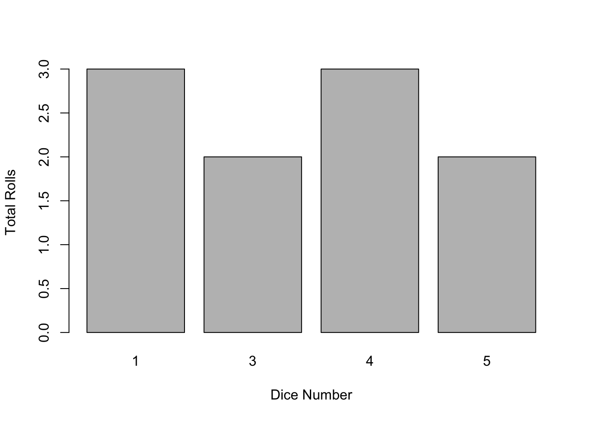

13 Writing functions
13.1 Introduction
Writing your own functions allows you to automate common tasks rather than copy-and-pasting. Functions reduce duplication by identifying repeated patterns of code and extract them out into independent pieces that can be easily reused and updated. This is beneficial for several reasons.
If you need to update your code, you only need to do so in one place.
You’re less likely to make inadvertent mistakes when writing functions compared to when you copy and paste. For example, when updating a variable or name in one section of a copy-and-pasted script, you will need to remember to change it in all the others.
It will tidy and shorten your R scripts.
13.2 Writing your own functions
If you find yourself having to repeat a task multiple times, it can be helpful to create your own custom function. The syntax of a function is given below:
function_name <- function(argument1, argument2, ...) {
statement or code that completes your task # function body
return(value)
}function_name: This is the name you give your function. It should be relatively short but describe what the function does. Try avoid using function names that are already used elsewhere in R (e.g., sum).
argument1, argument2, …: The arguments of the function are any R objects (numeric, strings, characters, data.frames, matrices, other functions). You can have any number of arguments
function body: The code between the ‘{}’ is the function body and uses the arguments to complete the specified tasks. Every time the function is called this code is run.
return value: The last line of code is the object to be returned.
Using this format, we can write a simple function to calculate the squared value of object x.
Now, we can use ‘square_num’ as we would any other function. We type out the name of the function, and inside the parentheses we provide a numeric value for x:
## [1] 25We can write a function with multiple arguments as well.
## [1] 38We can also use functions to calculate a range of values. For example, we might be given a set of temperature values in degrees Celsius that we need to change to Fahrenheit.
temp_C <- c(0, 5, 10, 15, 20, 25, 30)
celsius_to_fahrenheit <- function(temp_C) {
temp_F <- (temp_C * 9/5) + 32
return(temp_F)
}
celsius_to_fahrenheit(temp_C)## [1] 32 41 50 59 68 77 8613.3 Returning Multiple Outputs
The examples above all return a single item. What if I want to return multiple items from a function? Let’s start with a simple example that is similar to what we have already covered. The following function, which we have called dice, simulates rolling a six-sided dice by randomly sampling numbers 1 to 6 n times with replacement.
Choosing to “roll” the dice 10 times gives us the following output.
## [1] 2 6 3 3 5 3 4 3 4 4Now instead of the dice function returning the result of each individual roll, we now want a) a table with the total number of times each result occurred, and b) to plot the results. We can add a new line to the function for each argument. First we construct a table called ‘total’ that provides the summed results, then we plot these totals.
dice <- function(n){
toss <- sample(1:6, n, rep = T)
total <- table(toss)
barplot(total, xlab = "Dice Number", ylab = "Total Rolls", main = "")
return(total)
}
dice(10)
## toss
## 2 3 4 5
## 2 4 3 1